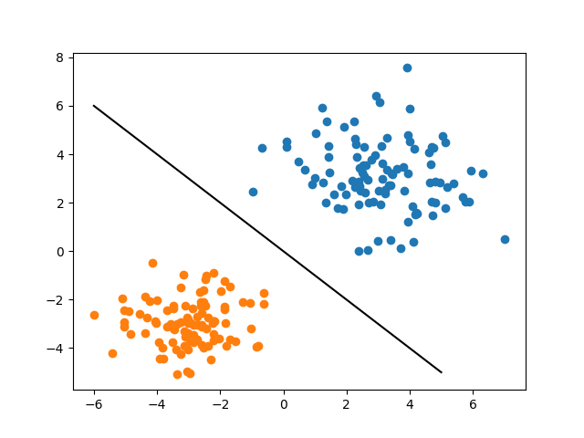
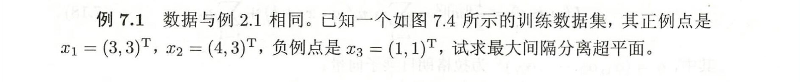
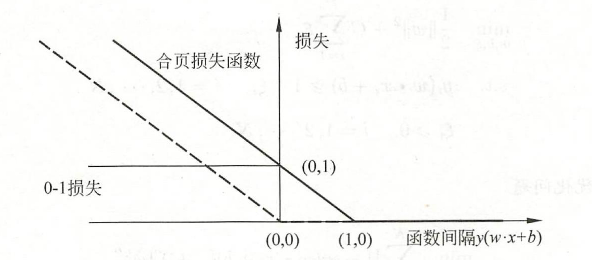

Last updated on November 23, 2022 pm
“很明显, 内容是抄来的.”
“你是瞧不起李航还是瞧不起我?”
引言
没什么引言, 姑且谈谈什么是 函数间隔, 什么是 几何间隔 吧.
其实大部分来自于直觉和观察吧. 比如你看下面这幅图, 好看不? 我画的.

假设蓝色点为正例, 显然直线代表的是分界面, 并且从直观上感受: 对于某个蓝色点而言, 离分界面越远, 它是正例的可能性越高, 而 某个蓝色点离分界面越近, 它是正例可能性越小 (即被误判的可能性越高). 因此, 能不能使用一种方法, 或者是表达方式来展示这种直觉呢? 答案是 距离.
一般而言, 一个点距离分离超平面的远近可以表示分类预测的确信程度. 设分离超平面为 wTx+b=0, 则 ∣wTx+b∣ 表示了某个样本点 x 与超平面的距离. 而 ∣wTx+b∣ 的符号与类标签 y∈−1,1 是否一致能够表示分类是否正确. 所以, 用
y(wTx+b)
可以表示分类的正确性和确信度. 这便是所谓的函数间隔.
函数间隔
训练集 T, 超平面 (w,b), (w,b) 关于某样本点 (xi,yi) 的函数间隔定义为
γ^i=yi(wTxi+b)
而超平面 (w,b) 关于 T 的函数间隔定义为
γ^=mini=1,⋯,nγ^i
考虑到 ω 和 b 是齐次的, 同时增大或减小时会影响到函数间隔, 因此引出几何间隔的概念:
几何间隔
训练集 T, 超平面 (w,b), (w,b) 关于某样本点 (xi,yi) 的函数间隔定义为
γi=yi(∣∣w∣∣wTxi+∣∣w∣∣b)
而超平面 (w,b) 关于 T 的函数间隔定义为
γ=mini=1,⋯,nγ^
正题
硬间隔线性SVM
SVM要求最大化几何间隔, 能使超平面以最大的置信度将样本分类
maxw,b s.t. γyi(∣∣w∣∣wTxi+∣∣w∣∣b)≥γ, i=1,⋯,n
将几何间隔化为函数间隔, γ=∣∣w∣∣γ^, 并考虑到函数间隔与 (w,b) 无关, 取 γ^=1, 得到如下二次规划:
minw,b s.t. 21∣∣w∣∣2yi(wTxi+b)≥1, i=1,⋯,n
优化该问题:
Lagrange 函数:
L(w,b,λ)=21wTw+i∑λ−i∑λiyi(wTxi+b)
对参数求梯度:
∂w∂L∂b∂L=w−i∑λiyixi=0=−i∑λiyi=0(1)(2)
带入 Lagrange 函数得对偶函数 (即拉格朗日函数关于参数的极小值):
−21i,j∑λiλjyiyjxiTxj+i∑λi
得原问题的对偶问题:
maxλ s.t. −21i,j∑λiλjyiyjxiTxj+i∑λii∑λiyi=0λ≥0
或:
minλ s.t. 21i,j∑λiλjyiyjxiTxj−i∑λii∑λiyi=0λ≥0
由 KKT 条件:
∇w;bLλiyi(wTxi+b)λi(yi(w∗Txi+b∗)−1)=0≥0≥1, i=1,⋯,n=0
考虑到 yi2=1 得:
w∗b∗=i∑λiyixi=yi−i∑λiyixiTxj
此处的 λi 表示最优的 λ∗.
因此得到分离超平面:
y(x)=(i∑λiyixi)Tx+yi−i∑λiyixiTxj
此处的 λi 表示最优的 λ∗.
最后的决策函数可以定义为:
f(x)=sgn(y(x))
来个例题: 用二次规划和对偶问题两种方式求解.

答案:
21x(1)+21x(2)−2=0
软间隔线性SVM
数据集线性不可分, 设置松弛变量 ξ. 线性不可分表示部分数据不能满足函数间隔大于等于1. 但我们希望添加松弛变量后可以满足.
yi(wTxi+b)≥1−ξi
但我们不允许无限制地引入松弛变量, 因此需要设置一定的代价:
Ci∑ξi, C>0
因此原问题等价于下述二次规划:
minw,b s.t. 21∣∣w∣∣2+Ci∑ξiyi(wTxi+b)≥1−ξi, i=1,⋯,nξi≥0
对偶问题:
maxλ s.t. −21i,j∑λiλjyiyjxiTxj+i∑λii∑λiyi=0C−λi−μi=0λi,μi≥0
其中 λi 是对间隔引入的乘子, μi 是对松弛变量引入的乘子. 解出最优解:
w∗b∗=i∑λiyixi=yi−i∑λiyixiTxj
此处的 λi 表示最优的 λ∗.
支持向量
对于硬间隔, 支持向量是使 λ>0 的样本, 由互补松弛性, 它们满足 yi(wTxi+b)=1, 因此这些样本落在间隔边界, 将分离超平面"支持"起来.
对于软间隔, 支持向量是 使 0<λ<C 的样本, 由互补松弛性, 此时 yi(wTxi+b)=1 且 ξi=0; 同时, 若 λ=C 即 μ=0, 即 ξi=0:
0<ξi<1: 分类正确
ξi=1: 在分离超平面上;
ξi>1: 误分
合页损失 (hinge loss)
线性支持向量机的原始优化问题
minw,b s.t. 21∣∣w∣∣2+Ci∑ξiyi(wTxi+b)≥1−ξi, i=1,⋯,nξi≥0
等价于问题
minw,b i∑[(1−yi(wTxi+b))]++λ∣∣w∣∣22
其中
[z]+={z0,z>0,z≤0
称为合页损失.
后面的问题可以理解为: 当间隔大于1时, 无损失; 当间隔小于1时给损失; 同时第二项是参数的正则项.
对比感知机, 线性SVM要求分类大于一定的置信度后, 才能将损失设置为0, 而感知机无置信度, 见下图

Kernel Trick
从线性SVM不能解决非线性问题的角度出发, 引入了核技巧, 从而得到非线性SVM.
核技巧的思想是将原特征空间经过 非线性映射, 映射至一个特征空间, 使得原特征空间中的超曲面对应与映射后特征空间的的超平面. 记非线性映射为 ϕ. 事实上, 该非线性映射将输入空间 (欧式空间或离散空间) 映射至一个特征空间 (Hilbert空间). 即:
ϕ(x):X→H
但是, 由于 ϕ 不好构造, 而直接计算内积 ϕ(x)Tϕ(y) 比先计算 ϕ(x) 再计算内积容易, 因此引入 核函数 的概念:
核函数
称 K(x,z) 为核函数, 如果满足: ∀x,z∈X,∃ϕ(x):X→H, s.t. K(x,z)=ϕ(x)⋅ϕ(z)
这时, 可以将
maxλ s.t. −21i,j∑λiλjyiyjxiTxj+i∑λii∑λiyi=0C−λi−μi=0λi,μi≥0
中的
21i,j∑λiλjyiyjxiTxj−i∑λi
改为
W(λ)=21i,j∑λiλjyiyjK(xi,xj)−i∑λi
正定核
能否不用构造 ϕ 就可以判断某个函数是否是核函数?
一般, 核函数指正定核函数.
Thm
K(x,z):X×X→R 是对称函数, 则 K 为正定核的充要条件为 K 对应的 Gram 矩阵半正定.
*扩展: Mercer 核
常用核函数
多项式核:
K(x,z)=(xTz+1)p
高斯核:
K(x,z)=exp(−2σ2∣∣x−z∣∣2)
拉普拉斯核:
K(x,z)=exp(−σ∣∣x−z∣∣)
sigmoid核:
K(x,z)=tanh(xTz+1)
SMO算法
SMO: 序列最小最优算法
思想是将原问题不断分解为二次规划的子问题, 每次从优化变量中取两个, 其中一个严重违背 KKT 条件, 另一个满足; 直到所有的变量都满足 KKT 条件.